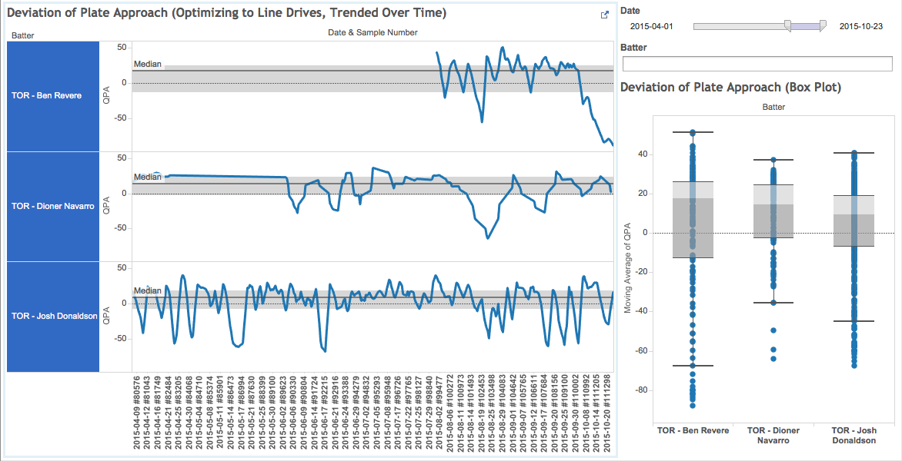
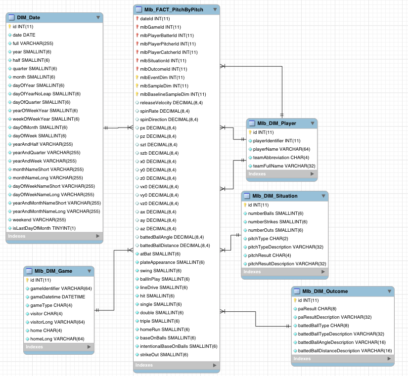
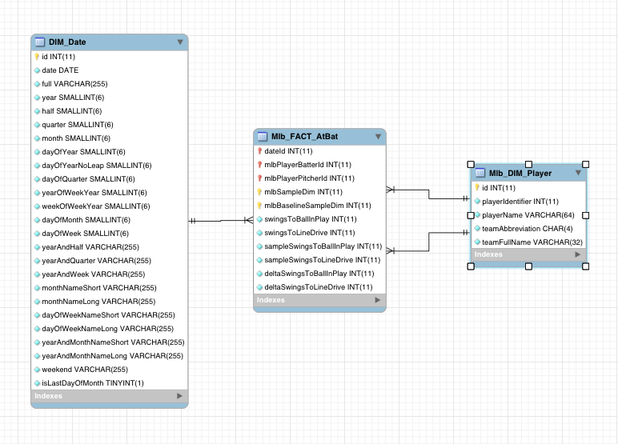
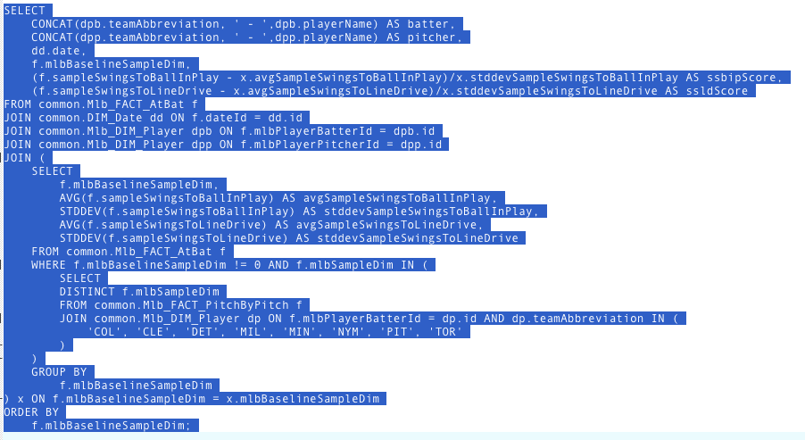

Analysis - Identifying Deviation of Plate Approach
It didn’t look like the typical Ben Revere at bat. In the top of the ninth in Game 6 of the ALCS, the Blue Jays trailing by 1, Revere came to the plate with runners on second and third and one out. The Kansas City Royals trusted Wade Davis to close out the series; the Jays at the very least needed Revere to get on base. The team’s MVP, Josh Donaldson, stood in the on deck circle.
Revere doesn’t hit walk off home runs, but he puts the bat on the ball more often than not. And yet, with a nasty curveball, Davis sent Revere walking back to the dugout. Donaldson grounded out moments later and the Royals won the pennant.
Wade Davis was the hero of the ninth inning but are there any indicators that the outs made could be attributed to Jays’ plate approach? What happened to Ben Revere?

Before analyzing the data, let's walk through the dashboard and explain what the visualizations are showing. On the left hand side, there is trending data for the player's plate approach score. Each player's pane has a grey strip with a dark grey line down the middle. This dark thin line represents the mean score. The light grey area represents where fifty percent of the data points fall. The score is optimizing towards line drives (more on this in the following sections). Some other important notes to the trend line:
- if trending above the mean, it represents a good approach to hitting line drives (or being "locked in")
- if trending below the mean, it could possibly represent a different hitting approach or possible struggles
- if a player is focusing on hitting line drives, the trend line should be tight to the grey area when successful
To the right and below the filters, there is a box plot showing the same data as a snapshot for the period. The whiskers represent the lower and upper quartiles. This view allows us to compare player profiles. Notice that Ben Revere has a higher mean score (17.7) than Dioner Navarro (14.4) and Josh Donaldson (9.4). This doesn't indicate that Revere is a better hitter, but that he profiles as a line drive hitter more often (and for which he does get credited, see https://en.wikipedia.org/wiki/Ben_Revere#Offense). More information on how the score is calculated will be discussed in following sections.
Taking a look at the dashboard Revere starts to negatively deviate from his profile during the playoffs. Starting October 3rd against Chris Archer, he drops to the lower quartile and never recovers. At his last sample taken, October 23rd against Yordano Ventura, his score is -88.3. This is 106 points away from his mean.
A player's success or slump doesn't hinge on his plate approach score. Revere started with Toronto going 0 for 13, yet his plate approach score indicates that he was still hovering close to his normal. From Aug. 21st to 29th, he had an 8-game hitting streak which bumped is batting average significantly, yet his plate approach score indicates that he was no more locked in than when he first joined the team. It was not until the playoffs that his plate approach score took a dive. The weekly line drive count for his last month in baseball for 2015 is 10, 7, 0, and 2.
The dashboard indicates that Revere was struggling with his plate approach come the Kansas City series. This intelligence could be used to go back to see what he was doing in his at bats prior to October 3rd when he was more "locked in". Maybe Revere could have hit one more line drive when the team needed it most.
Abstract
Offensive production rates are prone to rise and fall during hot streaks and slumps. It can be difficult to determine whether these periods are due to the quality of plate approach or some other factor. For instance, a batter's average may drop over a period due to quality pitching despite maintaining a good approach. In contrast, a batter may be maintaining his good offense through some seeing-eye singles. The following analysis and methodology will focus on uncoupling some of these other factors. The goal is to have a metric that can gauge whether a batter is trending away from their mean approach. Also, it provides a clear visual indicating when a batter starts to deviate.
The following few sections explain how to arrive at a measure for Plate Approach. If you would like to start playing with the Dashboard to see what it looks like and then jump back click here or use the PAoLD (Plate Approach Optimized to Line Drives) Dashboard link on the header ribbon.
Selecting Controlled Samples
Let's define a sample as a pitcher going through the batting order. This should give us roughly 2 to 3 sample sets of data per game per team to use for analysis. Note that these samples will be against starting pitchers and long relievers. In this way, we can control factors such as:
- pitcher's fatigue level - each sample is limited to roughly 40 to 50 pitches
- environmental factors - each sample is on the same day/night under the same weather conditions
- home plate umpire
- manager's playing matchups
Defining Plate Approach (Optimized to Line Drives) - PAoLD
Let's start with a simple premise: each time a batter swings his intention is to put the ball in play. (There is the exception where a batter may be spoiling a pitch, but let's keep definitions simple for working towards a minimum viable product.) If we count the number of swings to an event, we have a measure of success (the lower being preferred). To go one step further, I decided to track the number of swings to a line drive. As a first stake in the ground, this seems like a good proxy for a quality hit. If the feedback were good, it would be interesting to perhaps pull in hard contact data or blend different
Next, we only consider our controlled samples when we count the swings to a line drive. Once a line drive is hit (within a controlled sample), then we can reset and start from zero.
Now, we have sample sets (with nine players in each of them) with how many swings they have taken until they last hit a line drive. Let's transform those numbers into a score by finding the mean and calculating their standard deviation from the mean (see how this was derived from the dimensional model). Since I used a normal distribution, 99.7% of the data is within 3 standard deviations. To convert the number to look more like a score, I multiplied by -3/100. A negative was used so visually we can see an upward trend as positive when we start to look at the Dashboard. To summarize, controlled samples were created to compare the batter's ability to produce a line drive in the fewest number of swings. The sample assumes everyone is trying to put the ball in play and that line drives will serve as proxy to a quality hit.
Dashboard (How To Use)
Data for all the Hackathon judges' teams have been included. Most likely, the starting state of the dashboard will show too many players to observe insight. To filter down data:
- Use the "Date" range filter in the top-right corner
- Enter in a player's team into the "Batter" filter underneath the Date filter
- "COL*" for Colorado Rockies
- "CLE*" for Cleveland Indians
- "DET*" for Detroit Tigers
- "MIL*" for Milwaukee Brewers
- "MIN*" for Minnesota Twins
- "NYM*" for New York Mets
- "PIT*" for Pittsburgh Pirates
- "TOR*" for Toronto Blue Jays
- Also, partial player names may be entered (ex. "Cutch" for Andrew McCutchen)
Dashboard
Methodology
Using the data set provided by TruMedia Networks for the Hackathon, dimensional models were created as the basis for a data warehouse. Python scripts were used to ingest the data:
The first model below represents the "Pitch By Pitch" data provided:

Pitch By Pitch Dimensional Model.Next, an aggregate model was created to represent "At Bats". This model defines new metrics not found in the original data set. As "swings to ball in play" and "swings to line drive" were needed for the analysis, business logic was written within the Python scripts to produce these metrics.

At Bat Dimensional Model.With sound data models in place, it made analysis much easier via SQL. For example, the query used to produce the data extract was:

Query for Standard Deviation from the Mean.With the data to be analyzed in hand, the last step was to develop the dashboard using a visualization tool. Tableau Pubic was leveraged to build out the Dashboard.
Acknowledgements
Thanks to:
- Sean Shaughnessy for playing around with the dashboard and finding interesting results
- Aaron Hutchins for editing the Analysis piece
- Paul Luong for affirming the data models